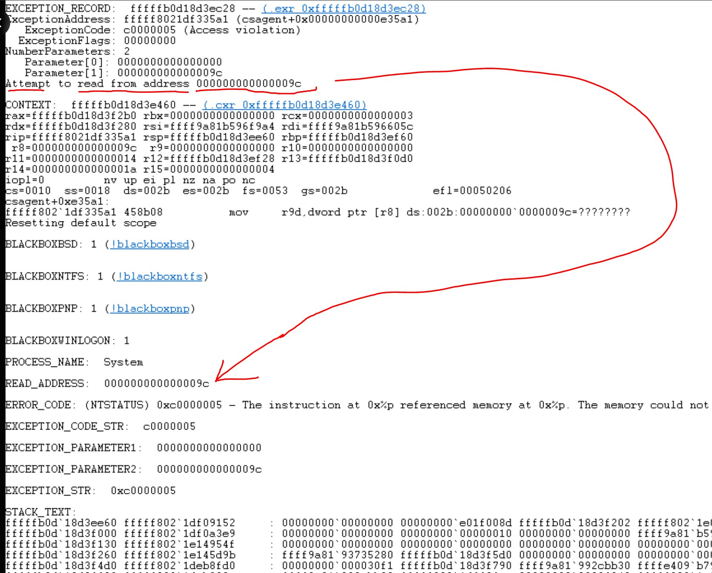

On July 19th 2024, a company that ran cybersecurity services on 298 out 500 of the top Fortune 500 companies, crashed 8.5 million end users worldwide. The event had sparked considerable debate within the community and raised questions about the reliability of even the most trusted security solutions.
Crowdstrike’s falcon sensor is a piece of software that is designed to operate in the background on the kernel level of a machine.
The falcon sensor is responsible for continuously monitoring for anomalies and potential threats. It operates with a combination of drivers that execute necessary code and channel files that contain rules for identifying possible attacks.
One of the key advantages of the falcon sensor is its ability to push updates on files on the fly, ensuring it remains up-to-date with the latest threat detection techniques. This capability is critical in a landscape where new threats emerge rapidly, necessitating constant vigilance and adaptability.
According to official reports, the outage was triggered by an update pushed into production on July 19th.
The update intended to enhance the sensor’s threat detection capabilities, contained a critical error that wen unnoticed by both the engineers and the automated systems responsible for quality assurance.
The failure was particularly catastrophic because of the sensor’s deep integration with the operating system.
Falcon Sensor’s ability to operate at the kernel level (ring 0) is facilitated by a WHQL certification from Microsoft. This certification ensures that third-party software can interact with the operating system at the most privileged level without causing instability, such as the notorious Blue Screen of Death (BSOD).
However, this same deep integration also meant that any error at this level could have severe consequences.
Link to Microsoft WHQL release signature: https://learn.microsoft.com/en-us/windows-hardware/drivers/install/whql-release-signature
The official statement from CrowdStrike indicated that the issue arose from an update to the channel files, specifically when channel file 291 was updated. This update led to widespread crashes across systems running the Falcon Sensor.
However, independent security researchers, including Zach Vorhies, identified a more technical root cause: an out-of-bounds memory error in the C++ codebase.

This memory error, which escaped detection due to a bug in the update validation software, had dire implications.
Because CrowdStrike operates at the kernel level, any significant error can lead to a system-wide crash, a safeguard mechanism to prevent further damage or exploitation.
The incident has led to a divide in opinion regarding accountability. Some industry experts attribute the failure to the engineers who wrote the flawed code, suggesting a lapse in their coding practice or oversight. Others point to systemic issues within CrowdStrike’s quality control and assurance processes, arguing that such a critical error should have been caught before deployment.
Regardless of where the blame lies, the incident underscores the challenges faced by cybersecurity firms. The need to update rapidly to counter emerging threats must be balanced with rigorous testing and validation processes to ensure system stability and reliability.
In response to the outage, the company has probably taken steps to improve QA processes, enhancing its automated testing capabilities, and review its update validation software. These measures are essential to restore confidence in their product as well as their clients.
For the broader cybersecurity community, this incident serves as a remindrr of the complexities and risks associated with deep system integration s and the importance of robust error detection and handling mechanisms. As cyber threats continue to evolve, the balance between rapid response and system stability will remain a critical area of focus for all cybersecurity providers.